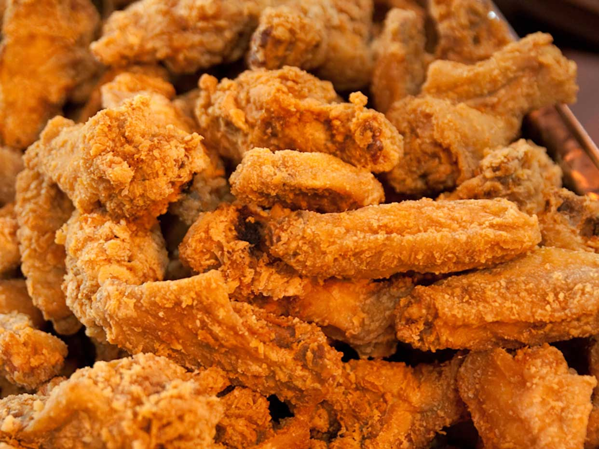

Chicken
Home

Chicken Recipe Description
This Chicken has elegent flavour which sticks onto
the tongue for hours. The recipe was discovered
in late 1900's in turkiye and has quickly found
it's way in numerous conutries.
Ingredients list
- salt
- flour
- pepper
- olive oil
steps
- Wash the chicken
- add salt and pepper to the chicken
- roll the chicken in flour
- fry the chicken in oil until crispy